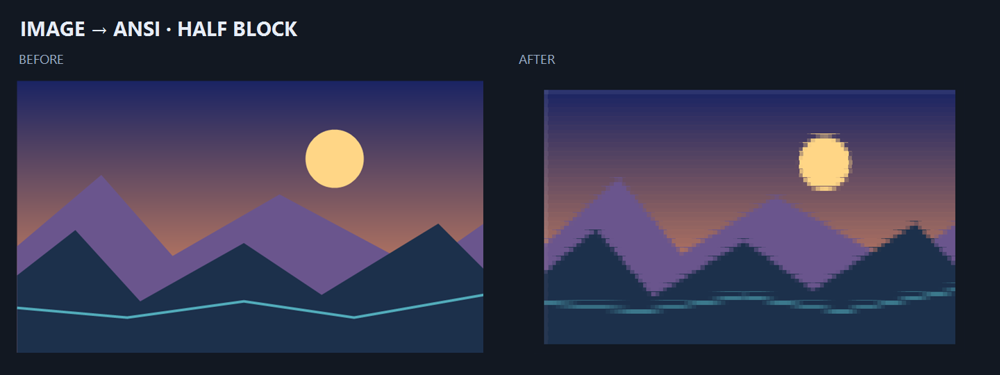
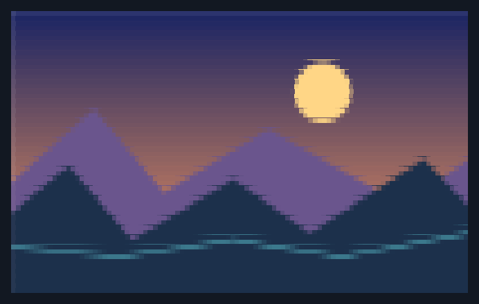
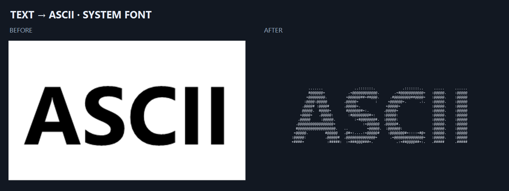
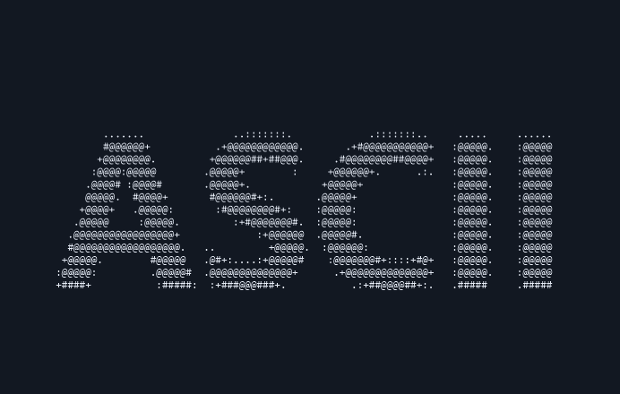
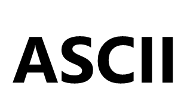

山景，半块双色
一个字符的上下两部分分别呈现颜色，保留天空与山脊的层次。


拖动滑块或用方向键调整，两张图保持完整比例。
打开山景结果原图ANSI 文件请用软件的 ANSI 查看器打开，或在支持颜色序列的终端查看。
查看山景参数
100 列，字符宽高比 0.5，半块双色，彩色输出。样例采用固定比例，实际创作也可以使用所选字体的比例补偿。
这里的图片和文字样例由软件实际转换、导出。拖动滑块比较原图与结果，展开参数后可以在软件中尝试相同设置。
跟着教程做一幅作品一个字符的上下两部分分别呈现颜色，保留天空与山脊的层次。


拖动滑块或用方向键调整，两张图保持完整比例。
100 列，字符宽高比 0.5，半块双色，彩色输出。样例采用固定比例，实际创作也可以使用所选字体的比例补偿。
先绘制系统字体的文字，再将明暗映射为字符，保留笔画轮廓。



系统字体的像素边缘可能随 Windows 版本变化。
输入 ASCII，Segoe UI 字体，110 字号，粗体；100 列，字符宽高比 0.5，字符集为“空格 . : + # @”。这是字形转图片后经图片管线生成的真实样例。
素材为仓库工具绘制的山景与系统字形，未使用访客上传内容。查看素材与复现说明